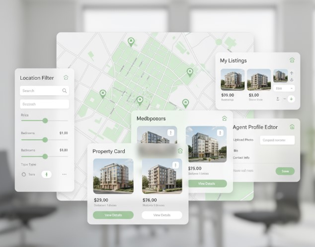

Real Estate Platform

Redesigned a responsive real estate platform to support agents across web and mobile, improving usability and content management.
Project Overview
- Company: Quoin, Inc
- Duration: Apr 2019 – Mar 2020
- Tools: Jira, User Stories, Custom CMS, Mobile UX
- Platform: Web & Mobile App for Real Estate Agents
- Delivery Method: Agile, Sprints (Scrum)
Key Contributions
- Partnered with stakeholders to align business goals and product vision.
- Defined and documented detailed user stories and functional flows.
- Directed iterative delivery using Agile and cross-functional collaboration.
- Ensured seamless mobile responsiveness and intuitive user experience.
- Supported custom CMS development for listings and content control.